| Locomotives | BB 7200 | Superacific Nord 231 C | Y 51100 |
|---|---|---|---|
| Livrée | Béton | Chocolat & crème | Vert |
| N° de série | 7203 | 35.251 & 3.1265 | 51150 |
| Images | 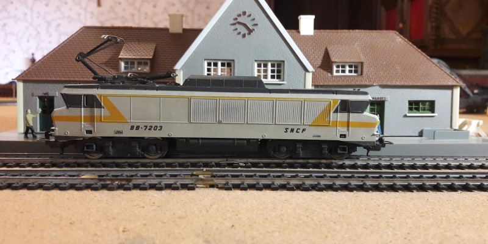 | 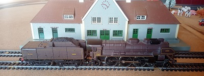 | 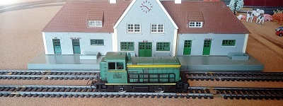 |
| 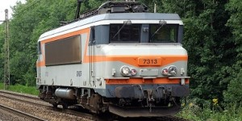 | 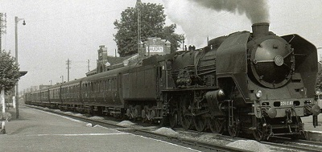 | 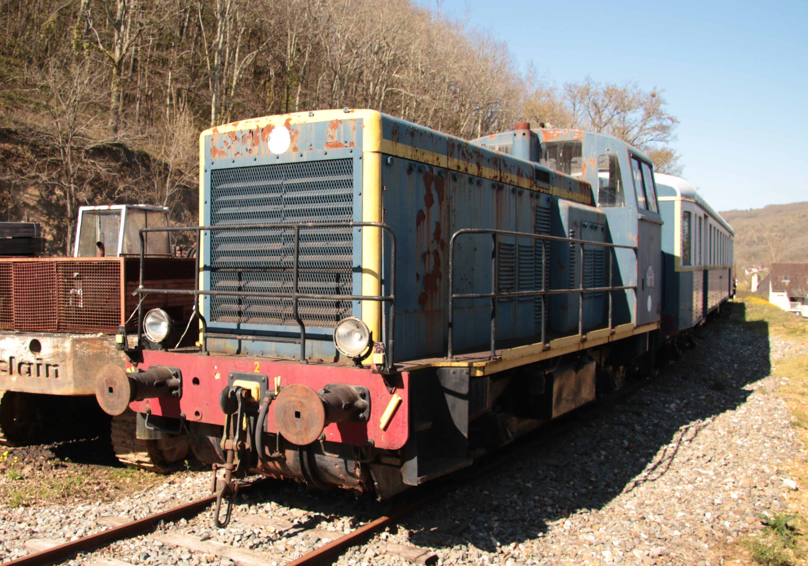 | |
| Marques | Lima | Jouef | Jouef |
| Surnoms | “La Blanche” | “La Vapeur” | “La Verte” |
| Types | Électrique | Vapeur | Diesel |
| Roues motrices | 4/8 | 4/8 | 4/4 |
| Locomotives | BB 67000 | BB 66000 | BB 92000 |
| Livrée | Capitole | Bleu | Capitole |
| N° de série | 67081 | 66150 | 9240 |
| Images | 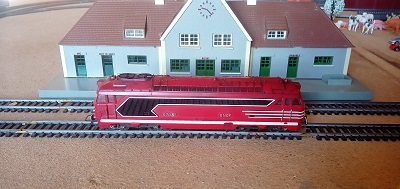 | 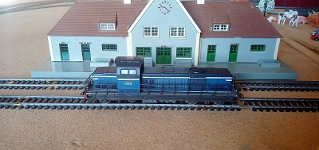 | 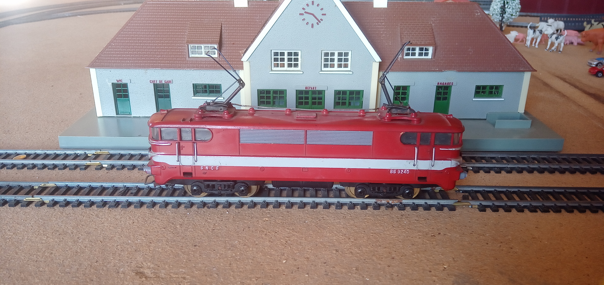 |
| 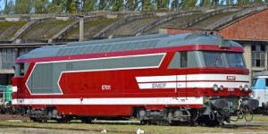 | 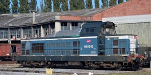 | 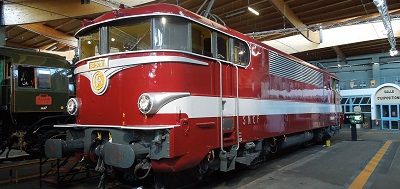 | |
| Marques | Jouef | Jouef | Jouef |
| Surnoms | “La Rouge” | “L'Évolution de la Verte” | “La Capitole” |
| Types | Diesel | Diesel | Électrique |
| Roues motrices | 2/8 | 4/8 | 8/8 |
| Locomotives | BB 17000 | BB 9200 | TGV |
| N° de série | 17150 | 9201 | |
| Livrée | Béton | Verte | Atlantique |
| Images | 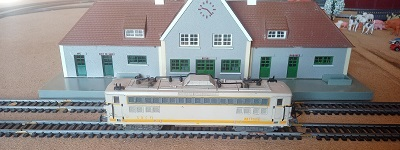 | 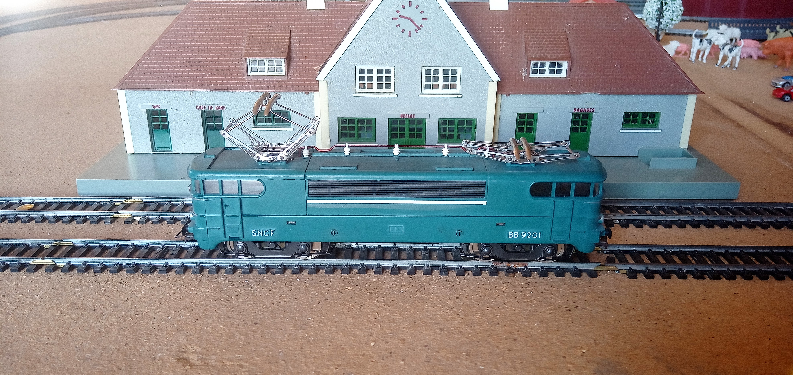 | 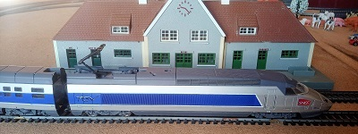 |
| 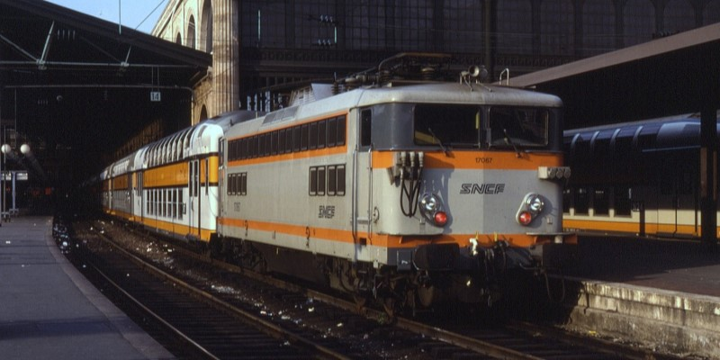 | 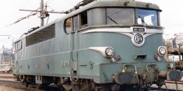 | 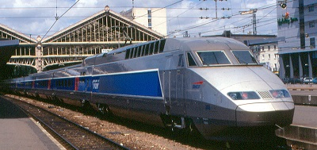 | |
| Marques | Jouef | Jouef | Lima |
| Surnoms | “La Nulle” | “La Vieille” | “Le TGV” |
| Types | Électrique | Électrique | Électrique |
| Roues motrices | 4/8 | 4/8 | 4/8 |
| Locomotives | BB 67000 | CC 40100 | A1A A1A 68000 |
| Livrée | Bleu diesel | Origine | Bleu diesel |
| N° de série | 67001 | 40101 | 68001 |
| Images | 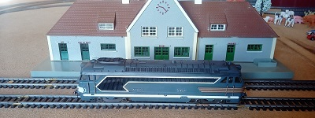 | 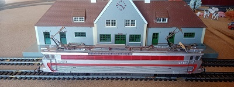 | 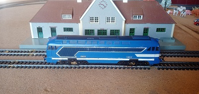 |
| 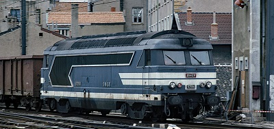 | 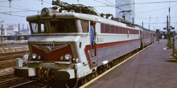 | 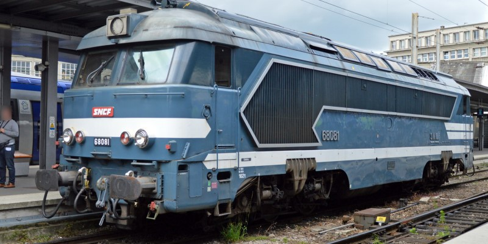 | |
| Marques | Jouef | Jouef | Inconnue |
| Surnoms | “La Bleue” | “La Longue” | “La fausse Bleue” |
| Types | Diesel | Électrique | Diesel |
| Roues motrices | 8/8 | 4/8 | 4/8 |
↑↑ Cliquez sur les images pour avoir des informations sur les vraies locomotives. ↑↑
Voilà un graphique représentant le temps mis par les locomotives à parcourir le circuit.
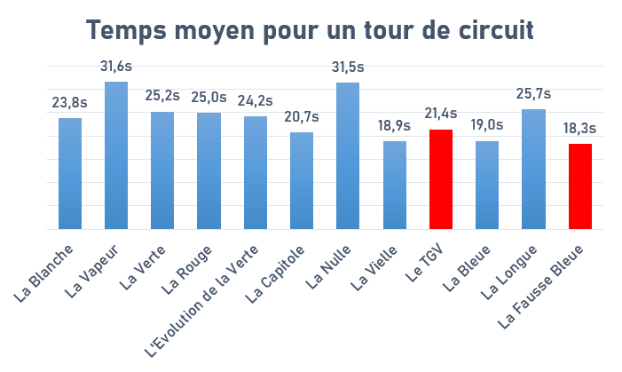